Documento de Teste — Bug Report
Testado em QA (qa.devtrust.cv) a 13/10/2026. Seis defeitos: dois impedem o uso (gravar falta justificada e filtrar por data) e quatro afetam os dados mostrados ou a validação.
Funcionalidade: Gestão Falta → Lista · Severidade: Média · Estado: Aberto
Resultado obtido:
Evidência
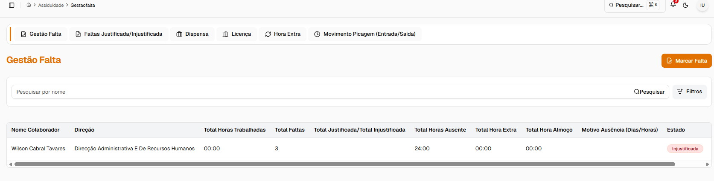
AS-001 — lista Gestão Falta com colunas vazias
Funcionalidade: Gestão Falta → Marcar Falta → Guardar · Severidade: Alta · Estado: Aberto
Resultado obtido: aparece "Ocorreu um erro inesperado ao gravar os dados" e a API responde 500. O log do serviço mostra ConstraintViolationException em DocumentoEntity: "tpDocumentoId is mandatory". A interface envia sempre uma linha de documento vazia (tipoDocumentoId: 0, documento: ""), mesmo sem anexo, e a API tenta gravá-la.
Payload enviado (POST /inps-api/api/v1/assiduidade/falta)
{"validar":null,"tipoOrdemServico":null,"colaboradorId":"01a11c93-c389-7314-8246-849d9cfd38c4","dataInicio":"2026-09-01","dataFim":"2026-09-30","totalDias":30,"totalDeHorasAusentes":"240:00","justificar":"SIM","motivo":"","parecer":"","responsavel":"","observacao":"","tipoJustificacao":41,"deduzirFaltaEm":"FERIAS","valorDiario":0,"valorTotal":0,"documentos":[{"id":null,"tipoDocumentoId":0,"documento":""}]}
Evidência
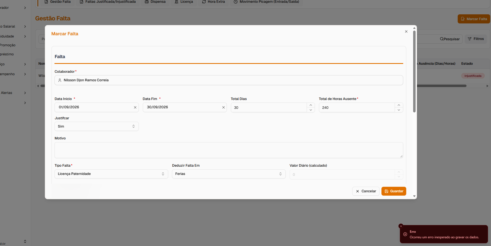
AS-002 — formulário Marcar Falta com mensagem de erro
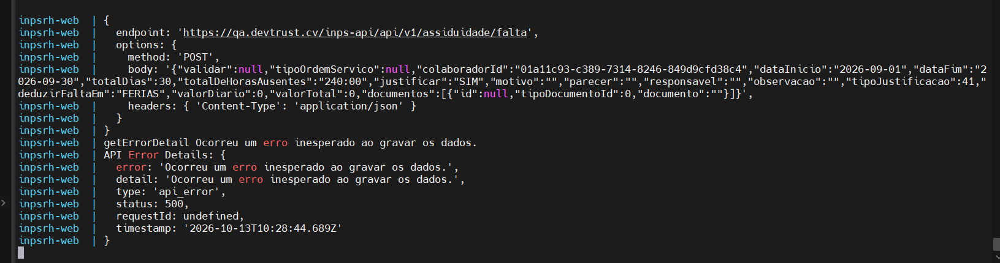
AS-002 — log da interface, erro 500
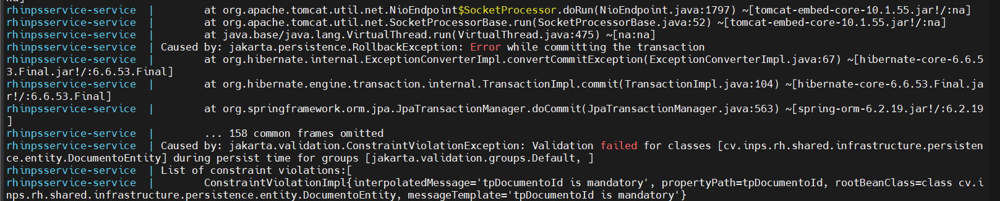
AS-002 — log da API, tpDocumentoId is mandatory
OBS: Ao marcar falta e escolher justificar no mesmo momento esse aparece na lisa de Falta Justificada/Injustificada com estado ""iinjustificada"
Funcionalidade: Gestão Falta → Filtros → Data Início / Data Fim · Severidade: Alta · Estado: Aberto
Resultado obtido: a lista mostra "Nenhum registo encontrado". O pedido GET /assiduidade/movimento-resumos?dataInicio=13/10/2026&dataFim=15/10/2026 devolve "API Error (Unknown Error 500)" em todas as tentativas. As datas são enviadas no formato dd/MM/aaaa.
Evidência
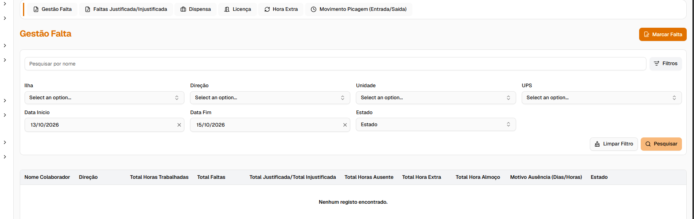
AS-003 — filtro por data sem resultados
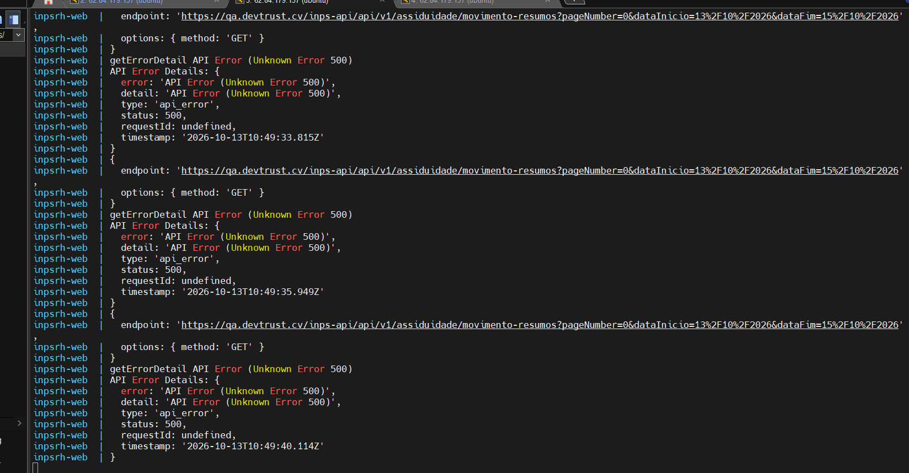
AS-003 — log da interface, erro 500 em movimento-resumos
Funcionalidade: Gestão Falta → Filtros → Estado / Ilha · Severidade: Média · Estado: Aberto
Resultado obtido: não é possível filtrar por Estado nem por Ilha: a lista mostra "Nenhum registo encontrado".
Evidência
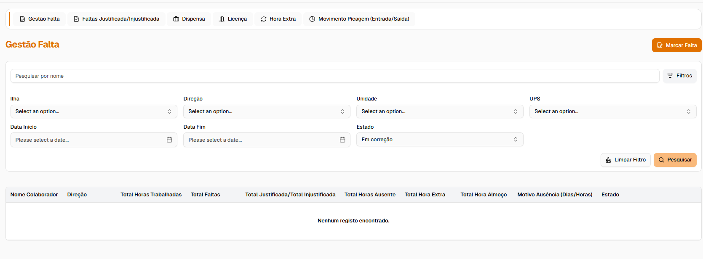
AS-004 — filtro por Estado sem resultados
Funcionalidade: Justificar Falta → Tipo Falta · Severidade: Média · Estado: Aberto
Resultado esperado: Tipo Falta é obrigatório também na API, porque define o desconto no salário e a necessidade de validação (RH_T_PARAM_SITUACAO).
Resultado obtido: a obrigatoriedade só existe na interface. Há faltas gravadas sem Tipo Falta, que chegam à validação com o campo vazio (ver AS-006).
Evidência
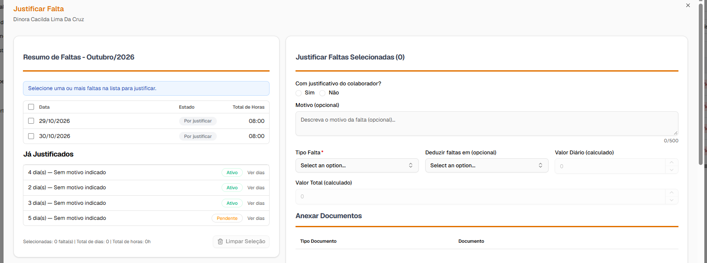
AS-005 — formulário Justificar Falta
Funcionalidade: Validar Informações do Colaborador → Justificar Falta · Severidade: Média · Estado: Aberto
Resultado obtido:
Evidência
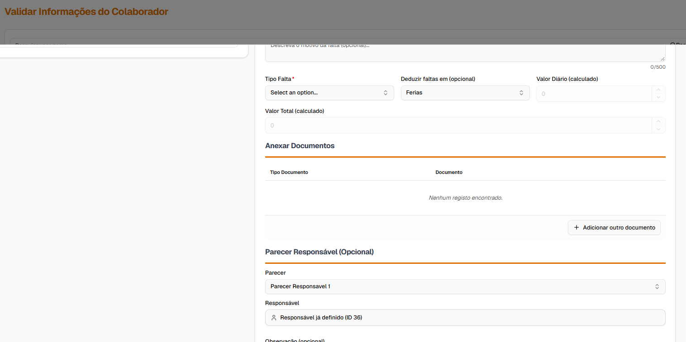
AS-006 — validação com Tipo Falta vazio e responsável por ID
Dois defeitos: a passagem para validação e a falta validada que não aparece na lista.
Funcionalidade: Justificar Falta → Guardar → Validação · Severidade: Alta · Estado: Aberto
Resultado esperado: a justificação aparece em Validar Informações do Colaborador quando cumpre a regra de validação (mais de 3 dias e tipo com desconto no salário). Fora disso, a falta fica com estado Ativo.
Resultado obtido:
Nota: a falta testada tem 1 dia e não desconta no salário. Pela regra RN09 não devia ir para validação, mas sim ficar Ativa. Repetir com uma falta de mais de 3 dias e com tipo que desconte no salário para confirmar a validação. O estado "Indefinido" e o valor de desconto com "Não" são defeitos em qualquer dos casos.
Evidência
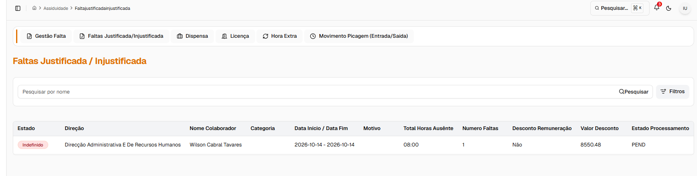
AS-007 — falta justificada com estado Indefinido
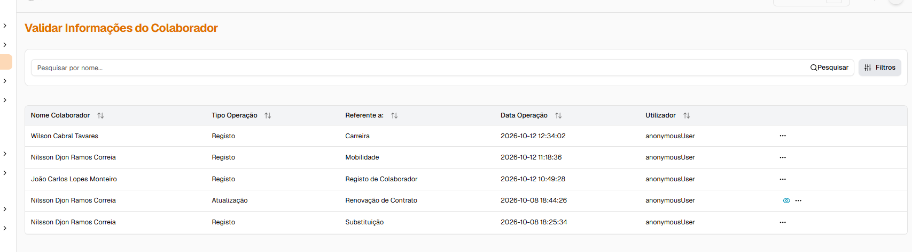
AS-007 — lista de validações sem a justificação
Funcionalidade: Faltas Justificada/Injustificada → Lista · Severidade: Alta · Estado: Aberto
Resultado esperado: a falta aparece na lista com estado Ativo. A lista lê de RH_T_FALTA e a validação grava RH_T_FALTA.ESTADO = 'A'.
Resultado obtido: a falta validada não aparece na lista.
Evidência:
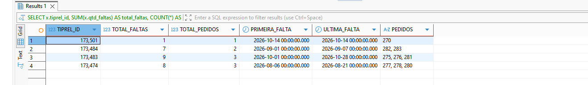
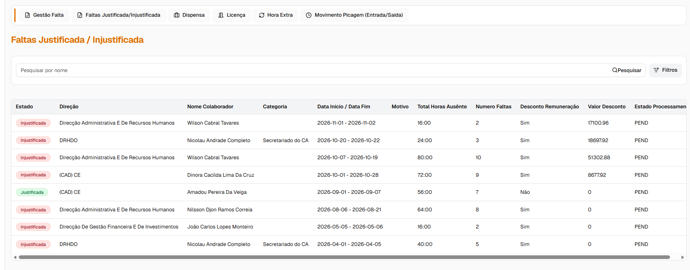
Funcionalidade: Dispensa → Lista Pedido Dispensa · Severidade: Média · Estado: Aberto
Resultado obtido:
Também visível no print:
Evidência
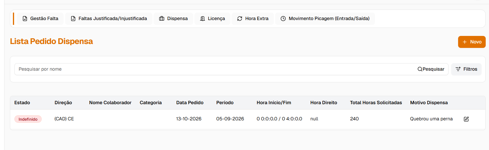
AS-009 — Lista Pedido Dispensa
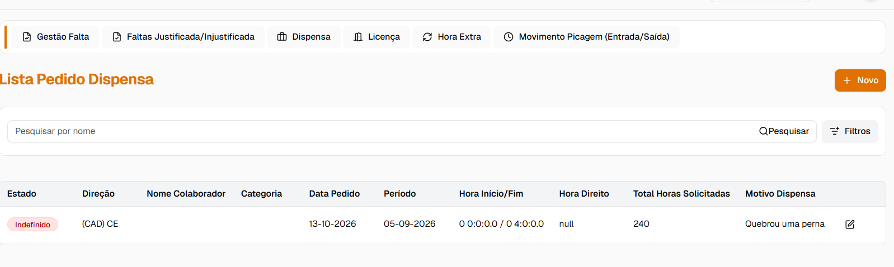
AS-009 — Lista Pedido Dispensa sem nome do colaborador
Funcionalidade: Licença → Novo · Severidade: Alta · Estado: Aberto (teste bloqueado)
Resultado esperado: a licença é gravada em RH_T_ABONOS_BENEFICIOS e _DET com estado Pendente. O formulário tem os campos Tipo Licença (obrigatório) e Motivo (opcional).
Resultado obtido:
Evidência:
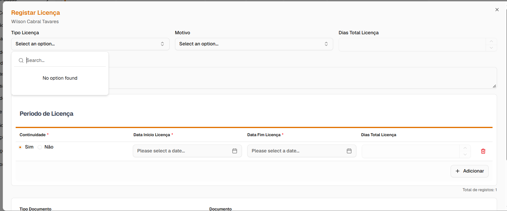
OBS: O registo de licença continua com defeito
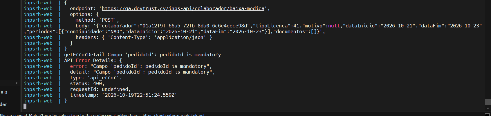
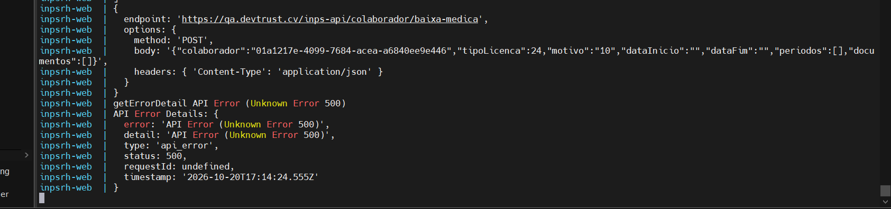
Funcionalidade: Validar Informações do Colaborador → Hora Extra · Severidade: Média · Estado: Aberto
Resultado esperado: o registo "Hora Extra" mostra o nome do colaborador, como os outros registos da lista.
Resultado obtido: a coluna Nome Colaborador vem vazia no registo de Hora Extra (13/10/2026 17:33:07).
Evidência
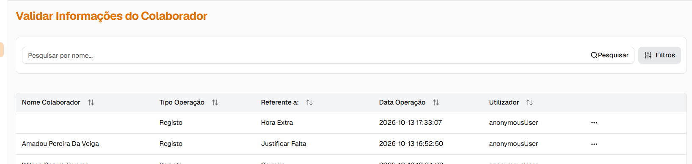
AS-011 — validação de hora extra sem nome
Funcionalidade: Gestão Falta → Lista · Severidade: Média · Estado: Aberto
Resultado esperado: Total Faltas = faltas justificadas + faltas injustificadas.
Resultado obtido:
Evidência
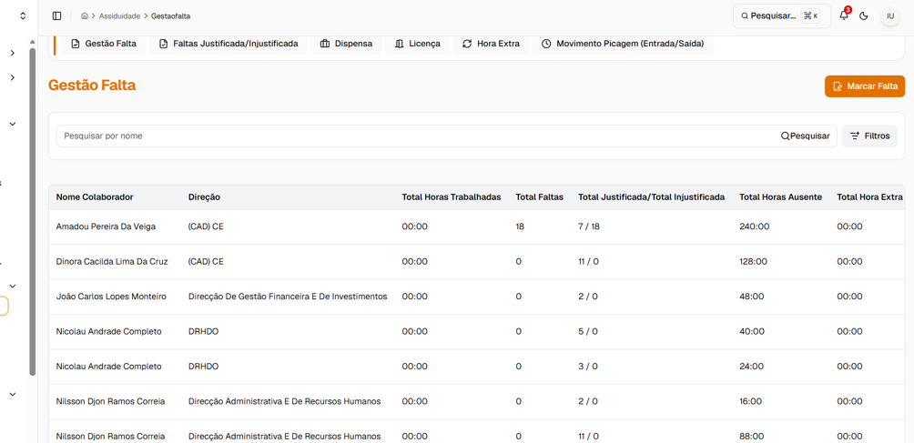
Funcionalidade: Gestão Falta → Marcar Falta → Documentos · Severidade: Baixa · Estado: Aberto
Resultado esperado: com Justificar = Sim, a tabela Documentos abre sem linhas; uma linha só é criada ao clicar em Adicionar.
Resultado obtido: a tabela abre com uma linha vazia (Tipo Documento "Selecionar…", "No file chosen"). Esta linha vazia é a que causava o erro do AS-002.
Evidência
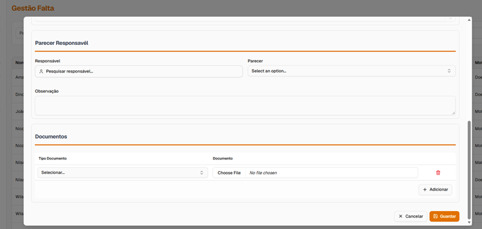
AS-014 — tabela Documentos com linha vazia
Funcionalidade: Validar Informações do Colaborador → Justificar Falta → Validar · Severidade: Alta · Estado: Aberto
Resultado obtido: ao validar com a opção CORRIGIR as 5 faltas de Nicolau Andrade Completo (01–05/04/2026), a API responde 400 "O valor do campo 'despacho_rh' é demasiado longo." e a validação não é gravada.
Payload enviado (PUT /inps-api/api/v1/assiduidade/falta/justificar/validar/01a155d7-f0f5-792d-8182-d7ed38b9a84c)
{"colaboradorId":"01a1446b-3737-73f7-8254-c043973ea61e","nomeColaborador":"Nicolau Andrade Completo","comJustificativo":"SIM","itensFalta":[{"selecionar":true,"id":1077,"data":"2026-04-01","tipoFalta":"Motivo Pessoal","horasAusencia":"08:00","valorAusencia":0,"motivo":null,"comJustificativo":"SIM","estado":"P","estadoDesc":"Pendente"},{"selecionar":true,"id":1078,"data":"2026-04-02","tipoFalta":"Motivo Pessoal","horasAusencia":"08:00","valorAusencia":0,"motivo":null,"comJustificativo":"SIM","estado":"P","estadoDesc":"Pendente"},{"selecionar":true,"id":1079,"data":"2026-04-03","tipoFalta":"Motivo Pessoal","horasAusencia":"08:00","valorAusencia":0,"motivo":null,"comJustificativo":"SIM","estado":"P","estadoDesc":"Pendente"},{"selecionar":true,"id":1080,"data":"2026-04-04","tipoFalta":"Motivo Pessoal","horasAusencia":"08:00","valorAusencia":0,"motivo":null,"comJustificativo":"SIM","estado":"P","estadoDesc":"Pendente"},{"selecionar":true,"id":1081,"data":"2026-04-05","tipoFalta":"Motivo Pessoal","horasAusencia":"08:00","valorAusencia":0,"motivo":null,"comJustificativo":"SIM","estado":"P","estadoDesc":"Pendente"}],"parecerResponsavel":"","obsResponsavel":"","tipoJustificacao":17,"deduzirFaltaEm":"FERIAS","valorDiario":0,"valorTotal":0,"documentos":[],"validar":"CORRIGIR","ano":2026,"mes":4,"tipoOrdemServico":""}
Evidência
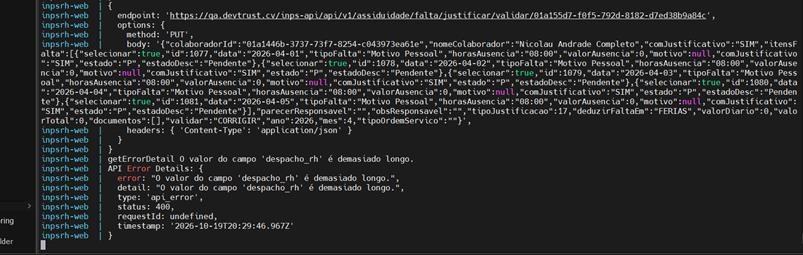
AS-015 — log da interface, erro 400 em despacho_rh
Funcionalidade: Faltas Justificada/Injustificada → Lista · Severidade: Alta · Estado: Aberto
Resultado esperado: as faltas com justificação mostram o estado Justificada e a coluna Motivo mostra o motivo/tipo da falta.
Resultado obtido:
Evidência
AS-016 — faltas justificadas com estado Injustificada e Motivo vazio
Funcionalidade: Faltas Justificada/Injustificada → Lista → Estado Processamento · Severidade: Média · Estado: Aberto
Resultado esperado: Estado Processamento indica se o desconto já tem registo em RH_REMUNERACOES (processado / pendente); sem desconto no salário não se aplica.
Resultado obtido: todas as linhas mostram "PEND", incluindo a de Amadou Pereira Da Veiga (Desconto Remuneração = Não, Valor Desconto = 0).
Devemos mostrar a descrição do estado ou seja não PEND mais sim Pendente
Evidência
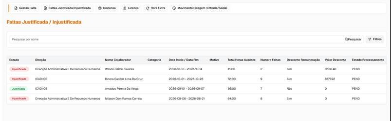
AS-017 — Estado Processamento PEND em todas as linhas
Funcionalidade: Faltas Justificada/Injustificada → Valor Desconto · Severidade: Alta · Estado: Aberto
Resultado esperado: com Desconto Remuneração = Sim, Valor Desconto = valor diário × número de faltas, maior que 0.
Resultado obtido:
Evidência
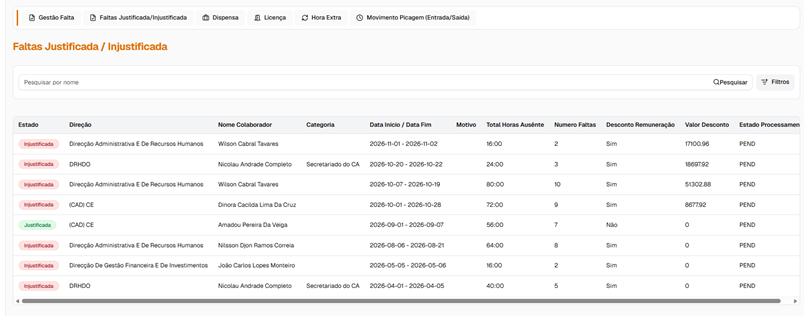
AS-018 — linhas com Desconto Sim e Valor Desconto 0